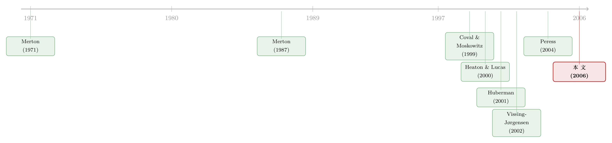

你不是在对冲，你在买你熟悉的东西
本文读的是 Massa & Simonov (2006, Review of Financial Studies)：用一份罕见的瑞典个人投资者全样本数据（含投资组合、工资、自雇收入、房产、人口学特征），作者直接检验投资者到底有没有「对冲」自己的非金融收入风险。答案是——没有。投资者非但不对冲，反而把钱押在与自己收入正相关的股票上。作者把这归因于「熟悉度（familiarity）」，并进一步证明这种熟悉度不是行为偏差，而是信息驱动的理性选择：靠熟悉度选股的人，反而比真去对冲的人赚得更多。
1 一个被数据卡了二十年的问题
理论金融里有一条几乎写进每本教科书的预言：理性投资者应该用金融资产去对冲（hedge）自己的非金融收入风险。你是个石油工程师，工资和油价、和能源股高度绑定，那么按理说，你的股票组合就该远离能源股、甚至去买和油价负相关的东西，好让金融财富在你失业、减薪的那一年帮你补上窟窿。这就是 Merton (1971) 以来跨期投资组合选择（intertemporal portfolio choice）的核心直觉。
可现实里的投资者，看上去完全是另一副样子。他们重仓自己公司的股票，买离家近的公司，追自己听说过的牌子。坊间的印象是：人们根本不在做什么最优组合，而是凭着「熟不熟」在挑股票。
于是金融学里就摆着一个二十年没能干净回答的问题：投资者到底有没有在对冲？ 之所以二十年没答好，不是因为没人想答，而是因为——没有数据。你需要同时知道一个人持有哪些股票（细到个股层面），又知道他全部的非金融收入与财富（工资、自雇收入、房产、负债），还得是能追踪同一批人的面板。这三样东西凑齐，几乎是不可能的任务。
本文的第一个、也是最硬的贡献，就是把这套数据凑齐了：一份具有代表性的瑞典人口样本，292,901 个家庭，财富被拆成现金、股票、基金、房产、贷款、债券等各个成分，还配上收入、税务、就业和人口学信息，持股细化到个股，并且是真正的面板。
2 为什么「老办法」根本测不出对冲
但真正关键的一步，不在数据，而在测法。
先说说老办法错在哪。传统的对冲检验，是把「投资者持有的风险资产份额」和「他的非金融收入与市场组合的相关性」放在一起回归。这套做法暗含一个致命的前提：投资者只能在一个风险资产（市场组合）里做选择。
可一旦有了多个风险资产，这种检验立刻就失去了任何识别力（power）。作者举了个再清楚不过的例子：假设投资者面前有两只股票，一只和他的工资正相关，一只负相关。他要对冲，可以去买那只负相关的，也可以去卖那只正相关的。前者增加风险资产持有，后者减少风险资产持有——两种相反的仓位变动，对应的却是同一个「对冲」动机。
这意味着什么？意味着「风险资产份额」和「收入—市场相关性」之间哪怕跑出一个漂亮的负系数，你也分不清：到底是投资者在买资产对冲，还是在卖资产去追逐熟悉的股票。老办法在多资产世界里，是一把读不出刻度的尺子。更糟的是，它还反事实地假设投资者持有一个充分分散的组合——而我们都知道，个人投资者的组合烂得不能再不分散。
3 把尺子换掉：直接看组合的「倾斜方向」
那怎么办？作者的解法是：别再绕圈子，直接去看投资者实际组合里的倾斜（tilt）。
如果一个人真在对冲，他的金融组合的风险特征，就应该被推离那些和他收入正相关的资产，推向那些负相关的资产。这就引出第一条可检验的假设。
Hypothesis 1（对冲倾斜的方向）：金融组合的风险特征应当向「与非金融收入负相关」的资产倾斜，并远离「正相关」的资产。
但这里有个微妙的陷阱。直接用「投资者收入与其组合收益的相关性」来度量对冲，会被一个先天存在的相关性污染：哪怕投资者还没做任何选择，他的收入本就可能和市场上的平均股票相关。所以作者构造了一个相对于市场基准的度量，叫对冲指数（index of hedging）。它衡量的是：投资者的组合，相比「直接持有市场组合」，在与其非金融风险的相关（协方差）上多走了多远。
$$ \Lambda = Corr_{y,m} - Corr_{y,p}, \qquad D = Cov_{y,m} - Cov_{y,p}. $$
这里 \(Corr_{y,m}\)（\(Cov_{y,m}\)）是投资者非金融收入与市场组合的相关（协方差），它是一个基准——代表「如果只持有市场组合，能帮你分散掉多少非金融风险」；\(Corr_{y,p}\)（\(Cov_{y,p}\)）则是收入与他实际组合的相关（协方差）。两者之差 \(\Lambda\)（\(D\)）捕捉的，正是投资者的主动组合选择对降低整体风险的贡献。真在对冲，就要求 \(\Lambda>0\)（\(D>0\)）。
用相关性的好处是「无量纲」、不受投资规模影响，便于跨人、跨时比较；而用协方差，则能从标准的多资产跨期模型里得到更锐利的约束。作者两套都做。
4 模型：对冲到底由什么决定
光有方向还不够。作者从多资产跨期组合选择模型里，推导出对冲指数应该如何随投资者的风险结构变化——这就是第二条假设的实质。
Hypothesis 2A（对冲倾斜的决定因素）：组合风险特征的倾斜，应当与非金融收入的方差正相关，与不同收入来源之间的协方差正相关。
设投资者有两类非金融收入 \(Y_z\) 与 \(Y_x\)（比如工资收入与自雇收入），财富水平为 \(W\)。模型给出的约束可以写成：
$$ D_z = \frac{Y_z}{W}\,Var_{Y_z} + \frac{Y_x}{W}\,Cov_{Y_z,Y_x} + \frac{1}{W}\,\tau_z, $$
其中
$$ \tau_z = -(Y_z+Y_x)\sum_{j=1}^{n}\phi_{S_j}\,Cov_{S_j,Y_z}, \qquad \phi_{S_j}=\frac{\mu_{S_j}/S_j - r}{(1-\gamma)\,\sigma^2_{S_j}}. $$
\(S_j,\ \mu_{S_j},\ \sigma^2_{S_j}\) 分别是第 \(j\) 只风险资产的价格、收益均值与收益方差。这个式子的直觉一层层剥开是这样的：
第一项——非金融收入的风险 \(Var_{Y_z}\) 越大，越该多对冲。这很自然：收入越抖，越需要金融资产来托底。
第二项——两类收入来源之间的协方差 \(Cov_{Y_z,Y_x}\)。如果你的两份非金融收入彼此负相关，它们其实已经在互相对冲了，对金融对冲的需求就被压低。换句话说，这一项度量的是「能用一种收入去对冲另一种收入」的程度。
第三项 \(\tau_z\)——它把对冲和资产的「均值/方差比」挂上了钩。一只和你收入正相关的股票，本该被你回避；但如果它的预期均值/方差比（\(\phi_{S_j}\)）很高，对冲它就变得昂贵了——因为对冲意味着你要放弃这只股票带来的高收益。理性投资者会在「对冲」和「赚钱」之间权衡。
把它写成可估计的回归形式（\(F\) 是控制变量向量）：
$$ D_z = \varsigma\,\frac{Y_z}{W}\,Var_{Y_z} + \vartheta\,\frac{Y_x}{W}\,Cov_{Y_z,Y_x} + \xi\,\frac{1}{W}\,\tau_z + dF. $$
对冲假说要求三个系数全为正：\(\varsigma>0,\ \vartheta>0,\ \xi>0\)。
下面这块把这个核心方程的每一部分拆开看：
到这一步，模型把「对冲」这件事翻译成了三个本该为正的系数。剩下的，就是去数据里看它们到底是正是负。
5 反转：他们不是在对冲，是在买「熟悉」
于是反转出现了。
数据给出的结论是：投资者总体上并不刻意对冲。恰恰相反，他们把组合倾向于那些与自己非金融收入更相关的股票。换句话说，模型里那些「本该为正」的系数，方向是反的。人们不是在用金融资产托底，而是在加倍下注自己已经暴露的那份风险。
是什么驱使人这样做？作者给出的答案是熟悉度（familiarity）。借 Huberman (2001) 的话说，人们「倾向于持有集中的组合……在退休账户里持有自家公司股票……投资本国股票」。熟悉度通常被定义为对股票的职业上的或地理上的接近：你会买你工作的那家公司的股票（Benartzi 2001 说这会让人乐观地外推过去的收益），会买总部离家近的公司（Coval & Moskowitz 1999；Hau 2001），会买品牌响亮的公司（Frieder & Subrahmanyam 2002）。
Hypothesis 2B（熟悉度的作用）：如果熟悉度影响组合选择，熟悉度指数应当与组合的对冲倾斜负相关。
把它加进回归（\(C\) 为熟悉度指数）：
$$ D_z = \varsigma\,\frac{Y_z}{W}\,Var_{Y_z} + \vartheta\,\frac{Y_x}{W}\,Cov_{Y_z,Y_x} + \xi\,\frac{1}{W}\,\tau_z + dF + \eta\,C. $$
如果熟悉度真的把人从对冲拉走，就该有 \(\eta<0\)。而且作者发现，熟悉度的力量强到足以盖过对冲动机，让整个组合的选择最终倒向了熟悉的股票。熟悉度不只是个边角效应，它还左右了投资者整体的风险承担。
这一点和散户「靠口耳相传选股」的图景是一脉相承的（关于信息如何在散户之间扩散，可参见《你买的那只股票，多半是邻居「说」给你听的》）。
6 真正的硬骨头：熟悉度是「偏差」还是「信息」？
到这里，故事其实只讲了一半。因为「人们买熟悉的股票」这件事，可以有两套截然相反的解释，而它们对金融学的含义天差地别。
第一套是「纯熟悉度（pure familiarity）」：纯粹的行为启发式。人脑爱抓显眼的、常被提起的信息（saliency / availability bias），于是错误地以为离自己近的就更重要。这是一种偏差。
第二套是「信息驱动的熟悉度（information-based familiarity）」：借 Merton (1987) 的话，「投资者只买卖他们掌握足够信息的证券」。地理接近之所以重要，不是因为它显眼，而是因为它是一条廉价获取信息的渠道。这是一种理性应对信息约束的方式。
怎么把这两者掰开？作者抓住了两者唯一的分水岭——与信息的关系，设计了两组检验。
第一组，看信息量的差异（Hypothesis 3）。 如果熟悉度是信息的替代，那么信息越充分的人，就越不需要靠「廉价的」熟悉度选股，他们对熟悉度的敏感度就该不同。作者用财富来代理信息量：财富高的人，购买私人信息的相对成本更低（Peress 2004），更不依赖公开的、廉价的信息。具体地，把上一年缴过财富税的人定义为「高财富/高信息」投资者（约占样本 10%），其余为「低财富」。检验写成：
$$ H_0:\ |\eta_{\text{high info}}| = |\eta_{\text{low info}}|, \qquad H_a:\ |\eta_{\text{high info}}| \neq |\eta_{\text{low info}}|. $$
第二组，看熟悉度冲击（familiarity shocks）。 设想一个本来住在沃尔沃工厂旁的投资者，搬到了离爱立信子公司很近的地方。如果熟悉度是行为偏差，他应该立刻从沃尔沃换成爱立信，但「总体上偏好近处股票」的倾向不该变。可如果熟悉度是信息驱动的，那么「搬家」这个动作本身就意味着他还来不及积累关于爱立信的信息——在这段过渡期里，他对熟悉度的敏感度应该下降：
$$ H_0:\ |\eta_{\text{fam.shocked}}| = |\eta_{\text{nonfam.shocked}}|, \qquad H_a:\ |\eta_{\text{fam.shocked}}| \neq |\eta_{\text{nonfam.shocked}}|. $$
作者用失业、换职业、以及过去三年搬过家（relocation）来识别这些冲击。
结果两组检验都指向同一个方向：熟悉度是信息驱动的，不是行为偏差。 它的敏感度随投资者的信息量而变（信息越少的人越受熟悉度左右），也随熟悉度冲击而下降——一个人刚经历了打乱其信息来源的冲击之后，对熟悉度的依赖会减弱。
7 收尾的一击：靠熟悉度的人，赚得更多
最后，作者还补了一记最有说服力的证据。如果熟悉度真是信息，那么靠它选股的人，业绩就该更好；反过来，那些「认真对冲」的组合，收益就该更低。
数据正是如此：对冲者的组合收益，低于熟悉度投资者的组合收益。 而且作为对识别的一次背书，高财富（高信息）投资者始终比低财富投资者赚得多——这恰好印证了「高财富=更知情」的设定，因为更知情的人本就该赚更多。一个本该是分散化代价的「不对冲」，在这里反而成了信息优势的体现。
这就把整篇文章的逻辑闭环扣上了：投资者不对冲 → 因为他们追逐熟悉 → 熟悉不是犯傻 → 熟悉是信息 → 信息能赚钱。
8 文献脉络
这条研究的源头，是 Merton (1971) 奠定的跨期组合选择框架：在非金融收入存在时，理性投资者应当持有风险资产去对冲。沿着这条线，一大批理论工作把劳动收入、创业收入、生命周期、资本利得税等装进模型（Telmer 1993；Heaton & Lucas 2000；Viceira 2001；Campbell et al. 2001）。
但实证这一侧始终卡壳。Heaton & Lucas (2000)、Vissing-Jørgensen (2002) 都坦承，「投资者究竟如何回应非金融风险」一直没能被干净地回答——因为既有检验都建立在「单一资产、持有市场组合」的框架上，没有用到个体的真实持股数据。
与此同时，另一条看似无关的文献在悄悄壮大：人们投资「熟悉」的东西。Coval & Moskowitz (1999) 发现了国内的「本地偏好」，Hau (2001) 发现地理位置影响交易盈利，Huberman (2001) 把「熟悉孕育投资」讲成了一个一般现象，Benartzi (2001) 记录了 401(k) 里对自家股票的过度配置。问题是：这到底是偏差，还是信息？Merton (1987) 早就给出了「信息不完全」的理性版本，而 Peress (2004) 进一步把「财富—信息获取—组合选择」连成一条理性链条；DeMarzo, Kaniel & Kremer (2004) 则给出了又一个把熟悉度理性化的模型。

本文恰好站在这两条线的交汇处：它用一套前所未有的数据，把「对冲检验」从单资产搬进了多资产的真实组合，又顺手回答了「熟悉度是偏差还是信息」这个悬而未决的争论。它的位置，是把组合选择的理论约束、家庭金融的实证数据、和熟悉度的信息解释三者第一次焊在了一起。
（关于「老乡/本地」是否构成真实的信息优势，本博客另有相关讨论，可参见《在全球市场里，「老乡」基金经理算不算一种主场优势？》。）
评论与延伸（Q&A + 研究方向）
(a) 几个可能的疑问
Q：用「缴没缴财富税」来代理信息量，会不会太粗糙？高收入但低财富的人岂不是被误分？
这确实是作者自己承认的局限。财富税按财富存量征收，和他们定义的非金融收入并不直接挂钩——样本里有些被归为「低财富」的人，劳动收入甚至高过很多「高财富」者，自雇收入尤其如此（最高自雇收入者恰恰是个低财富投资者，因为自雇多是小店主、牙医这类不需要高资本存量的收入）。作者的辩护是「业绩对账」：高财富组确实持续赚得更多，这与「高财富=更知情」的设定自洽。但严格说，这是一个间接验证，而非干净的外生分组。
Q：搬过家还继续持有老股票，会不会只是因为这人交易得太懒、根本不调仓？
作者明确点出了这个 caveat：搬家后不换股，可能只是「极不频繁地再平衡」的产物，而非信息故事。这是「relocation shock」识别上的一个真实软肋——它依赖于「搬家会扰动信息来源」，但无法完全排除单纯的惰性。失业、换职业这两类冲击相对更硬，因为它们代表职业生涯的结构性断裂。
Q：「不对冲反而赚更多」——会不会只是这些人承担了更多风险、拿的是风险补偿？
这是最该警惕的替代解释。熟悉度投资者组合更不分散、更集中，本就该有更高的（特质）风险。文章的逻辑要成立，关键在于这部分超额收益是「信息租金」而非「风险溢价」。作者用「高信息组系统性地跑赢」来支撑信息解释，但要彻底排除风险补偿，理想情况下需要对组合做风险调整后的 alpha 比较，而个人组合的风险调整本身就很难做干净。
Q：这和经典的「本地偏好（home bias）」文献到底有什么不一样？
本地偏好讲的是「投资者偏好地理上近的资产」，而本文的核心张力是对冲 vs. 熟悉：投资者不只是偏好近处，而是主动把钱押向与自己收入正相关的资产，方向上和对冲完全相反。本文的增量在于：第一，它用收入数据把「对冲」这个对立假说量化出来并否定掉；第二，它进一步把熟悉度从「偏差」推向「信息」。本地偏好是现象，本文是在为这个现象的性质定性。
Q：瑞典的结论能外推到美国、中国吗？
要谨慎。瑞典有全民登记数据、相对均质的人口、特定的税制和养老金结构，这既是数据优势，也是外部效度的限制。熟悉度的信息价值，可能依赖于本地信息环境的具体形态（媒体、社区、企业地理分布）。机制（信息驱动）大概率可迁移，但量级未必。
Q：既然熟悉度是「信息」，那它和「过度自信」式的过度交易是不是矛盾？
不矛盾，但确实在打架。本文说的是「靠熟悉选股的人选得对、赚得多」，强调的是选股方向上的信息含量；而过度自信文献强调的是交易频率上的非理性。一个人完全可以在选哪只股票上是知情的，同时在交易多频繁上是过度自信的。把这两条线放在同一个数据里同时识别，会是很有意思的延伸。
(b) 几个可能的研究问题与提案
1. 把「熟悉度 vs. 对冲」搬到公司债/信用市场。
【经济故事】员工的人力资本与雇主的违约风险高度绑定——你在一家公司上班，它一旦陷入财务困境，你同时面临失业和该公司债券贬值。理论上你该回避自家行业的信用债，可如果存在「信息型熟悉度」，知情的从业者也许反而能在自家行业的债里挑出被低估的标的。 【可行性】中。需要个人层面的债券持仓（多数国家缺失），可考虑用养老金/基金的雇员持仓，或某些有登记数据的北欧国家。识别上可沿用本文的「财富分组 + 职业冲击」框架。难点是个人直接持有公司债的样本太小。
2. 外资持有人是「熟悉度」的反面镜子。
【经济故事】本文讲本地投资者靠地理/职业接近获取信息。那么外资——天然缺乏这种熟悉度——是否系统性地承担了信息劣势？还是说全球分散的收益足以补偿？把「熟悉度=信息」的逻辑倒过来，外资持仓的信息含量应当随其与标的的「距离」单调下降。 【可行性】高。跨国持仓数据（如 FactSet/Refinitiv 机构持仓、各国登记数据）可得，可用「外资 vs. 内资」在收益预测力上的差异来检验，识别上可借助指数纳入、可投资度变化等外生冲击。
3. 远程办公冲击是否削弱了「地理熟悉度」的信息价值？
【经济故事】疫情后大规模远程办公，把「地理接近=廉价信息」这条渠道部分切断了。如果本文的信息解释成立，那么远程化程度高的人群/地区，其本地偏好带来的超额收益应当下降——这是一个天然的「熟悉度冲击」放大版。 【可行性】中。需要把远程办公强度（按职业/行业）与个人持仓和收益匹配，识别可用职业的「可远程性」指数作为暴露度。数据匹配是主要障碍。
4. 用「熟悉度冲击」做组合调整速度的检验。
【经济故事】本文发现熟悉度敏感度在冲击后下降，但没细究调整的动态：人们重建信息、把组合从旧熟悉转向新熟悉，需要多久？这个「信息折旧/积累」的半衰期，本身就是信息型熟悉度的一个可观测指纹。 【可行性】高（在有面板持仓的数据里）。用搬家/换职业作为事件，做事件研究式的组合相似度衰减曲线即可，识别相对干净。
5. 流动性维度：熟悉的股票，是否也是你「卖得掉」的股票？
【经济故事】熟悉度可能不只关乎信息，也关乎流动性——你更愿意持有你了解、也更容易脱手的本地股票。把流动性从信息里剥离出来，能进一步细化「熟悉度溢价」的来源。 【可行性】中。需要在个股层面同时控制信息代理与流动性指标（换手、价差），识别上的挑战是信息与流动性高度共线。
我的判断
这篇文章最漂亮的地方，是它的测度设计而非数据本身。数据当然稀缺、当然难得，但真正的洞见是那句「多资产世界里，老的对冲检验没有识别力」——这个观察一针见血，并直接催生了「对冲指数 = 市场基准协方差 − 实际组合协方差」这把更锋利的尺子。一旦尺子换对，「投资者不对冲、反而追熟悉」的结论就变得几乎无可辩驳。后面把熟悉度从「偏差」推向「信息」，用财富和冲击两组检验交叉验证，再用业绩对账收尾，逻辑链条相当完整。
我的主要担心仍在识别的间接性上。其一，「财富税」作为信息量的代理太粗，作者自己也清楚高收入低财富的人会被误分；理想情况下应该有更直接的信息暴露度指标。其二，「不对冲反而赚更多」与「承担更多风险拿风险补偿」之间，文章没能做到完全切割——个人集中组合的风险调整本就棘手，这让「信息租金」的论断留了一道口子。其三，relocation shock 受「惰性再平衡」的污染，是识别上最软的一环。
我接下来最想看到的，是把这套「对冲 vs. 熟悉」的检验拿到信用市场和外资持有人上去跑——人力资本与雇主违约风险的绑定，比与股价的绑定更尖锐；而外资恰恰是「无熟悉度」的天然对照组。如果熟悉度真的是信息，那它在这两个场景里留下的指纹，应该比在瑞典股票里更清晰。
参考文献
Benartzi, S. (2001). Excessive Extrapolation and the Allocation of 401(k) Accounts to Company Stock. Journal of Finance 56, 1747–1764.
Campbell, J. Y., J. Cocco, F. Gomes, and P. Maenhout (2001). Investing Retirement Wealth: A Life-Cycle Model. In J. Y. Campbell and M. Feldstein (eds.), Risk Aspects of Investment-Based Social Security Reform, University of Chicago Press, 439–473.
Coval, J. D., and T. J. Moskowitz (1999). Home Bias at Home: Local Equity Preference in Domestic Portfolios. Journal of Finance 54, 2045–2073.
DeMarzo, P., R. Kaniel, and I. Kremer (2004). Diversification as a Public Good: Community Effects in Portfolio Choice. Journal of Finance 59(4), 1677–1715.
Frieder, L., and A. Subrahmanyam (2002). Brand Perceptions and the Market for Common Stocks. Working Paper, UCLA.
Hau, H. (2001). Location Matters: An Examination of Trading Profits. Journal of Finance 56, 1959–1983.
Heaton, J., and D. Lucas (2000). Portfolio Choice and Asset Prices: The Importance of Entrepreneurial Risk. Journal of Finance 55, 1163–1198.
Huberman, G. (2001). Familiarity Breeds Investment. Review of Financial Studies 14, 659–680.
Merton, R. C. (1971). Optimum Consumption and Portfolio Rules in a Continuous-Time Model. Journal of Economic Theory 3, 247–413.
Merton, R. C. (1987). A Simple Model of Capital Market Equilibrium with Incomplete Information. Journal of Finance 42, 483–510.
Peress, J. (2004). Wealth, Information Acquisition and Portfolio Choice. Review of Financial Studies 17, 879–914.
Telmer, C. I. (1993). Asset Pricing Puzzles and Incomplete Markets. Journal of Finance 48, 1803–1832.
Viceira, L. M. (2001). Optimal Portfolio Choice for Long-Horizon Investors with Non-Tradable Labor Income. Journal of Finance 56, 433–470.
Vissing-Jørgensen, A. (2002). Towards an Explanation of Household Portfolio Choice Heterogeneity: Non-Financial Income and Participation Cost Structures. Working Paper, University of Chicago.